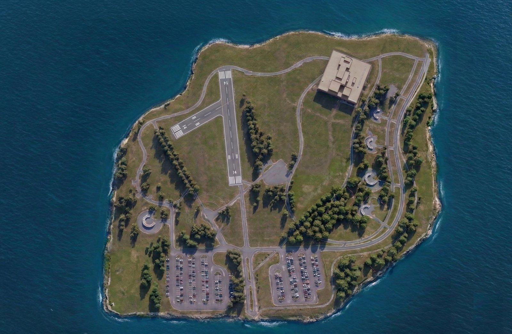
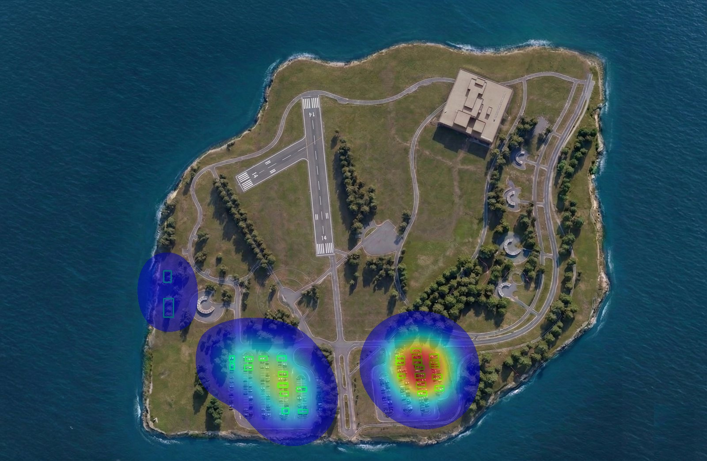
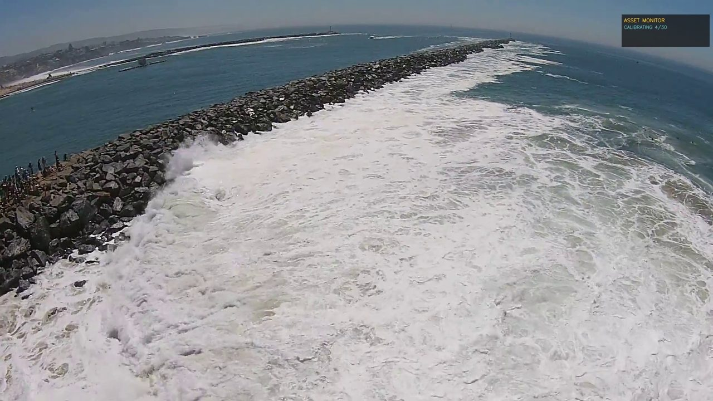
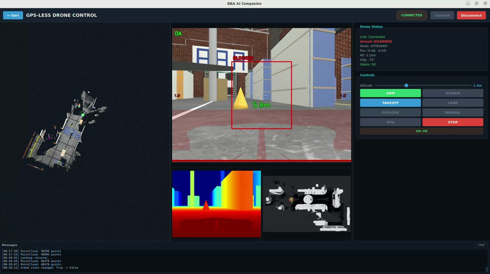

Prepared for Falcon Eye Drone Services · 22 September 2026
You already collect the imagery.
This is the layer after the flight.
Detection, counting, change between flights and the report your client receives —
produced automatically from the data you are already flying for. Nothing below is a concept:
the output on this page was generated by our engine.
BBA Technology · Izmir, TürkiyeIzmir Bilişim Vadisi Technopark
ISO 9001TÜBİTAK R&D
Where the hours go
Flying is fast. Reading the imagery is not.
A survey or progress flight takes an hour. Turning it into something a client
will accept — counted, marked, compared with last month, written up — takes days of an
analyst's time. That step is the one we automate, and it is the same step on a solar
field, a construction site or a pipeline corridor.
2.9 s
per frame processed
on CPU, no GPU needed
30
objects found
in one frame, with confidence
10
classes separated
car, person, truck, bus, motorcycle…
0
new hardware
runs on the imagery you already fly
Processed here, today
Below is a real run of our engine on a sample aerial
frame — not a mock-up. Detection, class separation and density map produced in one pass.
The frame is only a sample; what we are showing is the machinery behind it. On your
sites it runs on your own imagery, with the classes and thresholds that matter to your
clients — panels, towers, corrosion, stockpiles, whatever the contract asks for.

Input — raw aerial frame
The kind of frame a survey flight produces by the thousand.

Output — detected, classified, counted
30 objects, each with class and confidence. 2.9 seconds on CPU.

Asset & defect tracking
The same engine marks assets and condition across repeat flights.

3D reconstruction & digital twin
SLAM-based mapping with measurable geometry and change between flights.
What the client actually receives
The report writes itself.
Your deliverable is not the video. It is this — and today an analyst assembles
it by hand after every flight.
FEDS · Site Report
Site 04 · Solar field
Flight 12 — 22.09.2026
Progress & condition, flight 12
Compared with flight 11 — 18 days earlier. Generated automatically, 4 min after upload.
30
objects detected this flight
+6
change since last flight
3
items flagged for review
| Zone | Detected | Change | Flagged | Status |
|---|
| Zone A — north array | 11 | +2 | 0 | clear |
| Zone B — access road | 8 | +3 | 1 | review |
| Zone C — substation | 6 | 0 | 0 | clear |
| Zone D — perimeter | 5 | +1 | 2 | action |
Generated by BBA Vision · runs on your own machines
Branding, zones and thresholds configurable
Every flight produces the same document, in the same
format, with the same thresholds. The client gets a comparable record instead of a fresh
opinion each month.
The wider layer
Detection is one module of six.
01
One control screen
DJI, PX4 and ArduPilot in a single operating picture — planning, telemetry,
video and reporting. Most fleets run on three or four apps that never join up.
02
Image processing
Detection, classification, counting, tracking and change between flights.
The engine above is the generic baseline; each site gets its own tuned model, trained on
a few hundred frames from your own flights.
03
3D & digital twin
SLAM-based reconstruction with measurable geometry, navigable by the client.
04
Automated reporting
Findings, counts, flagged frames and comparison assembled into your branded
document, without an analyst.
05
Runs on your machines
On-premise or on the aircraft. No cloud, no imagery leaving the site —
which is what energy and government clients ask first.
06
GPS-denied flight
Vision-fed navigation for interiors, tanks and tunnels, where satellite
positioning stops.
Twenty minutes is enough to judge it.
Send us one sample flight from a site you know. We process it, return the report, and you
decide whether it belongs in your delivery. No commitment attached to that.
serdarbatkan@bbateknoloji.com
Serdar Batkan · BBA Technology · Izmir, Türkiye